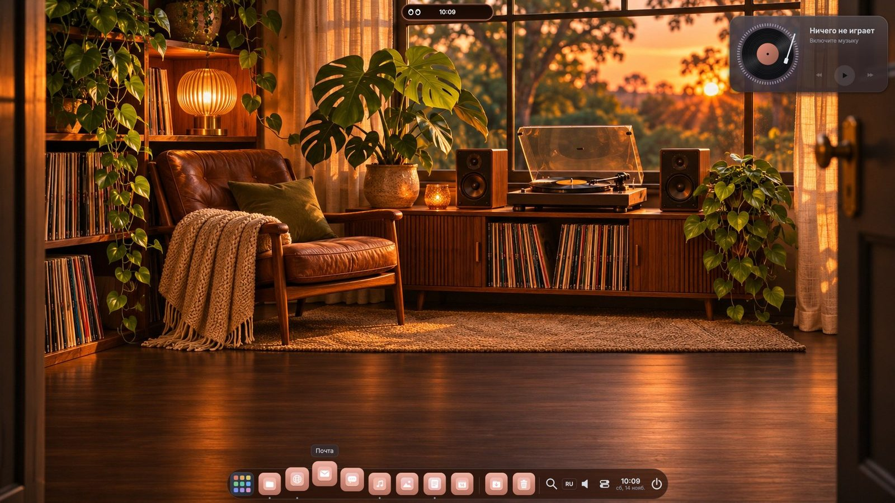
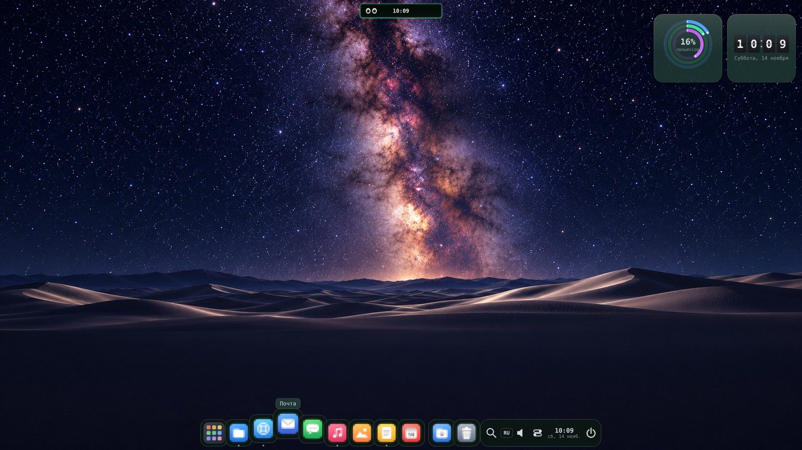
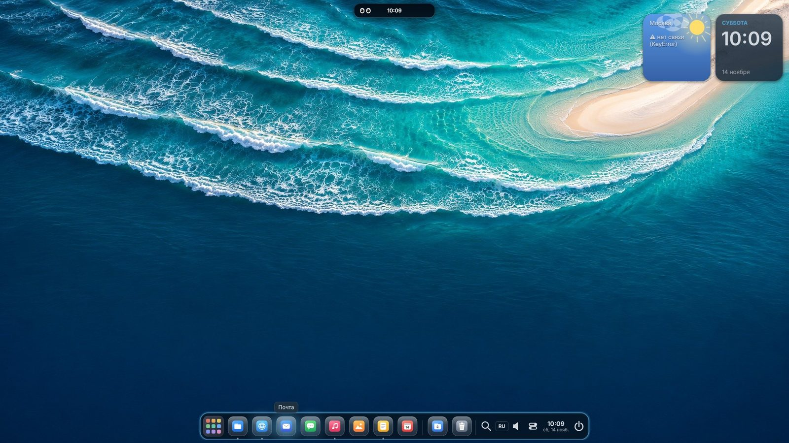
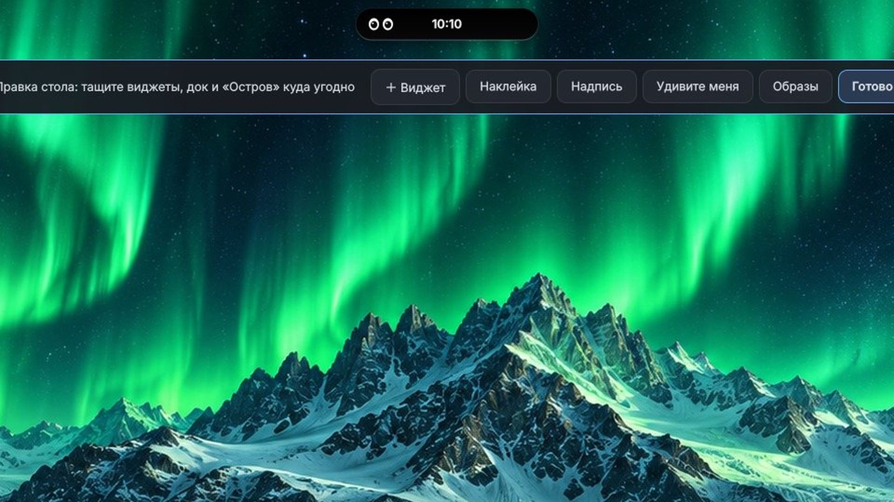
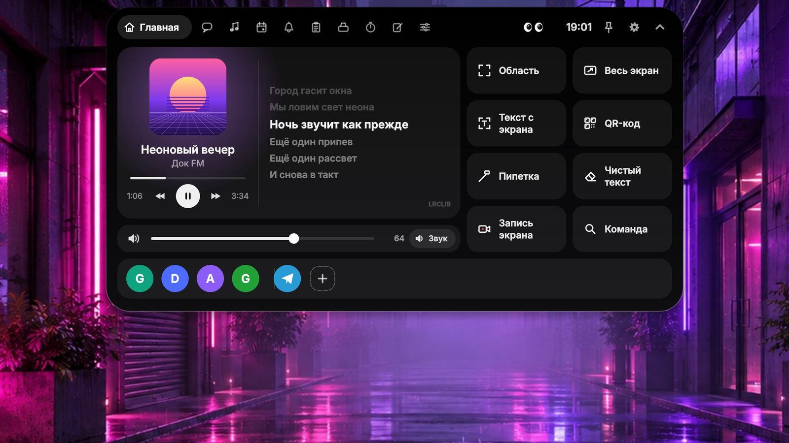
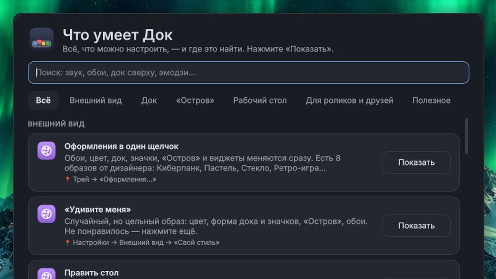

Сделайте Windows своим
Док превращает обычный рабочий стол в красивый и удобный: панель программ у любого края экрана, живой «Остров» сверху, живые обои, виджеты и готовые образы — всё меняется в один щелчок.
⬇ Скачать бесплатно





Образы от дизайнера
Обои, цвет, форма дока, значки, «Остров» и виджеты меняются разом. Не понравилось — «Удивите меня» соберёт случайный образ.


Где хотите, что хотите

Док у любого края
Снизу, сверху, слева или справа — просто зажмите Alt и перетащите. Нужно больше места — включите второй док для игр или работы.

Править стол
Двигайте виджеты, док и «Остров» прямо мышью, добавляйте наклейки, GIF и надписи любым шрифтом.

«Остров» вверху экрана
Живая пилюля: музыка с обложкой и текстом песни, уведомления, напоминания, таймер, файлы с телефона по Wi-Fi.

34 виджета
Часы, погода, пластинка, календарь, калькулятор, луна, мировое время. Любой размер, матовое стекло, готовые наборы.

Живые обои
Видео, GIF и живые сцены. Обои сдвигаются вслед за мышью, светятся в такт музыке, а за окном снег — он идёт и на обоях.

Не запутаетесь
«Что умеет Док» — все функции с кнопкой «Показать», а «Совет дня» раз в день подскажет что-то новое.
Образы людей
Столы, которые собрали пользователи Дока. Скопируйте код и вставьте в Доке: Оформления → «Вставить код…».
Частые вопросы
Это бесплатно?
Да. Всё, что описано на этой странице, — бесплатно.
Это безопасно?
Док не следит за вами, в нём нет рекламы. Каждое обновление подписано: Док не поставит файл, если подпись не совпала. Подробно — в политике конфиденциальности.
Компьютер будет тормозить?
Нет: Док занимает около 150 МБ памяти и меньше 1 % процессора, а живые обои встают на паузу, когда их не видно и в играх.
Что с панелью задач Windows?
При первом запуске вы выберете сами: оставить её, прятать автоматически или убрать совсем.
Как вернуть всё как было?
Удалите Док в «Параметры → Приложения». Панель задач, обои и значки вернутся.
Где задать вопрос?
Напишите нашему боту в Telegram — ответит автор. Или в самом Доке: «Сообщить о проблеме».